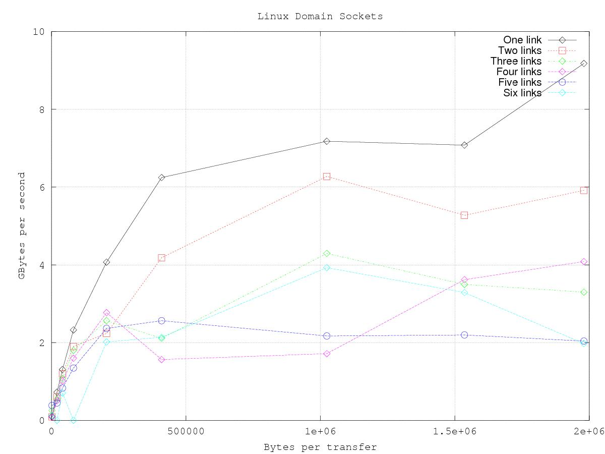

Appendix F
Optimization
F.1 Introduction
As a system framework, REDHAWK can be affected by any of a large number of possible ways in which a system can be configured. System optimization is sensitive to the set of applications that the system is intended to support. However, there are some simple settings that can apply to a wide set of applications. This chapter focuses on these generalized settings.
F.2 omniORB configuration
The default omniORB configuration is to rely on the loopback interface of the operating system. While easy to use and manage, the loopback interface is not the fastest default tranport that omniORB supports. omniORB also supports Linux Domain Sockets, which are essentially named pipes with the Internet socket API. Linux Domain Sockets are configured through the omniORB configuration file (/etc/omniORB.cfg).
Set the endpoints where the server is listening:
Set the endpoints that are published in an object’s IOR:
After changing these settings, it will be necessary to reset the name and event services. Also, these services’ log files must be deleted, since they would preserve IORs that are no longer valid:
To verify that Linux Domain Sockets are being used, go to /tmp, where two directories should now exist: omni-omni and omni-root. These two directories contain the files for the Linux Domain Sockets. The format for these directories is omni-<user>, so any user starting an object that hosts an omniORB servant will have a directory that contains the files for the Linux Domain Socket. Given that communications are now over what is basically pipes, make sure that read permissions are open when communicating between objects owned by different users.
This change in the omniORB configuration will have a substantial, measurable improvement in data transport rates.
F.3 Packet transfer size
REDHAWK transfers data using BulkIO, which is basically RPC. The size of the data sequence that is passed on each of these calls will have an effect on the data rate. The size of the transfer is not controlled by the REDHAWK runtime environment; instead, data producers can pass any arbitrary length less than giopMaxMsgSize.
Experiments were performed on a system with the specifications shown in Table F.3.
|
Figure Figure F.3 shows the supported data rate in Giga-bytes per second at different transfer sizes when using the loopback interface (the default setting for omniORB). Note that data rates on the experiment platform plateau when transfer size approaches approximately 500 kB. Using higher transfer sizes, data rate does not improve, while latency will increase, since it takes longer to transfer the larger blocks of data. The specific value at which data rates plateau is system-specific.
|
|

Another result derived from the experiment shown in Figure Figure F.3 is that there is a substantial impact when the number of component pairs transfering data increases.
By following the directions outlined in Section Section F.2, it is possible to achieve higher data rates. Figure Figure F.3 shows the same experiment as that shown in Figure Figure F.3, but with omniORB configured for Linux Domain Sockets. As seen in Figure Figure F.3, sustained data rates on the computer used in this experiment are roughly four times higher when using Linux Domain Sockets rather than the loopback interface. Also note that, even when heavily loaded, the Linux Domain Socket configuration is as fast or faster than the lightly-loaded loopback configuration.
|

|
F.4 Messaging latency
Much like BulkIO, messaging is subject to performance issues as the transfer size changes. Experiments were run where the size of the message was modified and the latency per message was measured. The average latency was measured for sets of 1000 messages. Figure Figure F.4 shows the latency results when using the loopback interface and Figure Figure F.4 shows the latency when using Linux Domain Sockets. Latency is a function of the size of the message, where the measured latency ranges between 40-150 microseconds and 50-160 microseconds for Linux Domain Sockets and loopback, respectively.

Note that in Figures Figure F.4 and Figure F.4, latency is linear as a function of the message size. Furthermore, the number of concurrent messaging components has no discernible impact on the message latency. Finally, the difference shown between Linux Domain Socket performance and loopback interface performance is, while measurable, relatively small.

REDHAWK Documentation is licensed under a Creative Commons Attribution-ShareAlike 3.0 Unported License.